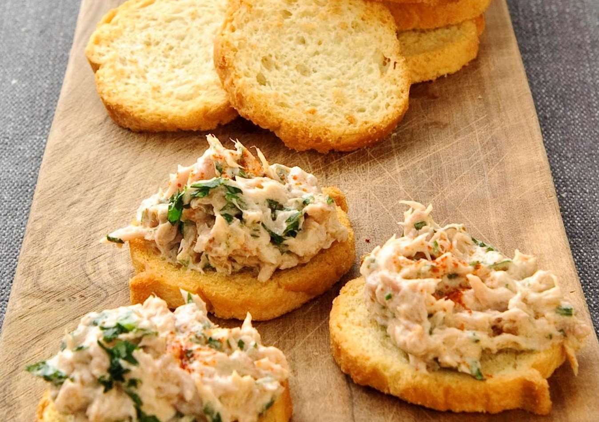

Tonijn op toast
Trek in iets hartigs, maar niet veel tijd? Probeer als tussendoortje dan eens deze tonijn op toast. Of serveer het als voorgerecht.
Ingrediënten
- 1 blikje tonijn op water
- 1 eetlepel halva- of yogonaise
- 2 eetlepels magere kwark
- 1 eetlepel sherry
- 1 flinke theelepel gedroogde peterselie
- volkoren toastjes
- paprikapoeder
Bereidingswijze
1. Laat de tonijn uitlekken en prak deze met een vork fijn.
2. Meng er de mayonaise, kwark, sherry en peterselie door.
3. Besmeer de toastjes met het tonijnmengsel en strooi als garnering een beetje paprikapoeder over de bovenkant.
